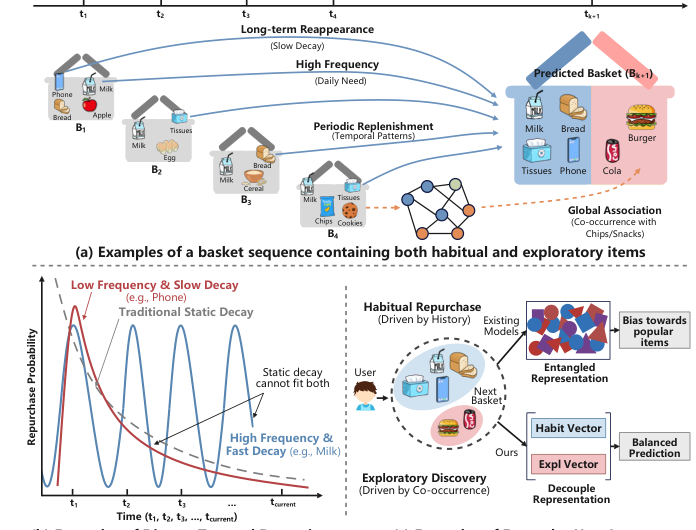
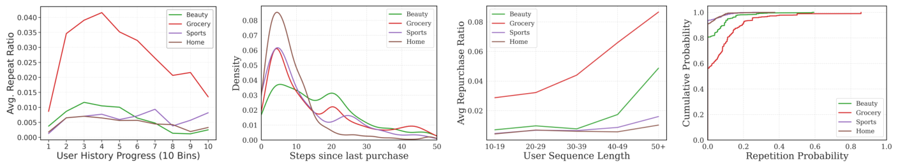
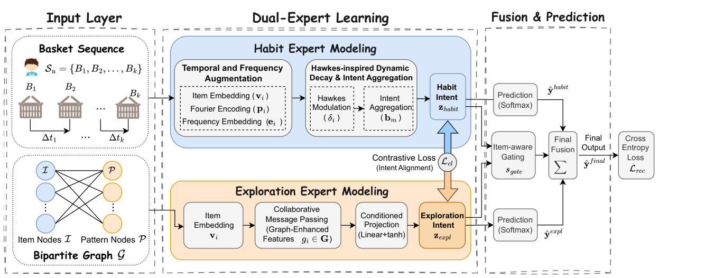
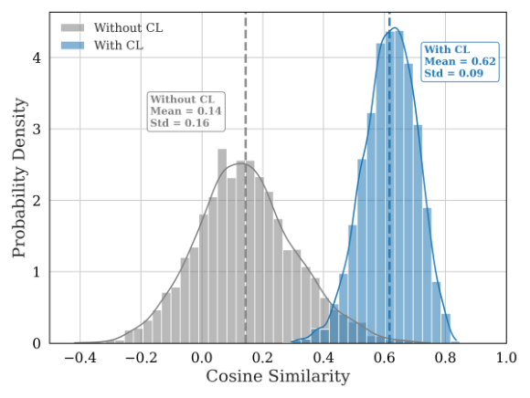
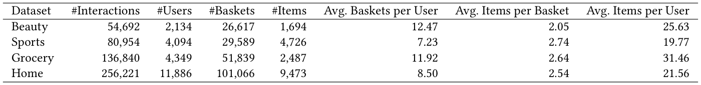
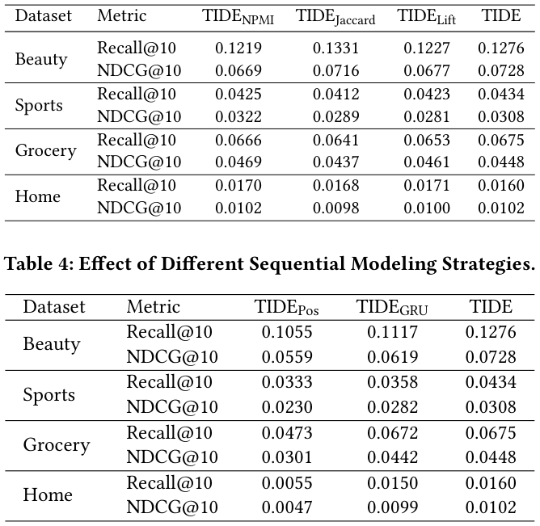

Time-Interval-Aware Disentangled Expert Modeling for Next-Basket Recommendation (时间间隔感知的解耦专家建模用于下一购物篮推荐)
- 会议/期刊: SIGIR 2026 (第 49 届国际 ACM SIGIR 会议，Melbourne, VIC, Australia)
- 推荐链路定位: 召回 (Retrieval) — 下一购物篮 (Next-Basket) 候选物品 Top-K 排序
- 研究方向: 序列与会话推荐 (sequential_rec) / 自监督对比与解耦表征 (self_supervised_denoising)
- 论文原文: https://arxiv.org/abs/2605.00499v1
- 开源代码: https://github.com/Hiiizhy/TIDE
TL;DR (核心速览)
针对下一购物篮推荐 (NBR) 中"习惯性复购"与"探索性发现"两类冲突意图被纠缠于单一表征、且离散序列建模忽略连续时间间隔与物品级周期性的痛点，TIDE 提出 Hawkes 增强的傅里叶时间编码刻画物品级非单调补货周期，并用双专家架构（Habit Expert + Pattern-Guided Exploration Expert）配合物品感知门控显式解耦两类意图，在四个 Amazon 数据集上以全库排序协议一致超越 SOTA NBR 基线。
Background & Motivation (背景与动机)
- 领域背景与主流范式: NBR 的目标是在给定用户历史购物篮序列 \(S_u=(B_1,\dots,B_k)\) 与目标时刻 \(t_{k+1}\) 下预测下一篮 \(B_{k+1}\)。主流范式包括马尔可夫链、RNN/Transformer 序列模型、注意力机制，以及引入超图、对比学习、反事实推断等辅助信号的方法。时间建模上普遍采用静态单调衰减（购买后兴趣立即达峰并指数衰减）。
- 现有方法局限 (Limitations of Prior Work):
- 单调衰减假设过于朴素：如图 1(b) 所示，日用品（牛奶）呈强非单调周期性补货，耐用品（手机）呈单次长周期峰值，静态衰减无法同时拟合两类节奏，导致无法回答"何时补货"。
- 意图纠缠 (Entangled Representation)：复购习惯信号与探索发现信号在同一隐空间竞争，习惯信号（且偏向热门物品）压制微弱的探索兴趣，如图 1(c)。
- 频域方法不适配 NBR：已有傅里叶/频谱方法（如 FMLP-Rec、频率滤波）面向序列推荐，假设平滑正弦振荡，无法刻画复购事件触发的强度突增 (excitation spike)。
- 核心挑战 (Key Challenge): 简单的特征拼接或加深网络无法解决——因为冲突根源在于表征结构层面的纠缠与时间建模假设层面的错误（单调 vs. 非单调），而非容量不足。
- 核心洞察与切入点 (Key Insight): 作者在四个 Amazon 数据集上做了系统的行为统计分析（图 2）：
- 重复率演化：Grocery 呈倒 U 型，Beauty 呈振荡，Home 平坦——用户意图随生命周期动态变化；
- 复购间隔分布 (KDE)：多数域短期峰值 (\(\Delta t<10\))，Beauty 呈双峰，证明时间影响非单调；
- 历史长度影响：Grocery 重复率随序列长度从 0.03 升至 ~0.08，Beauty 存在长度 40 的阈值效应；
- 物品级重复概率 CDF：Home/Sports 超 90% 物品重复概率为 0，Grocery 超 40% 物品有复购——域间异质性极强。
这些观察直接支撑了"物品级非单调周期 + 架构级意图解耦"的设计。


Problem Formulation & Method (问题定义与方法架构)
1. 符号定义与输入表征 (Notations & Input Representations)
- 用户集 \(\mathcal{U}=\{u_1,\dots,u_{|\mathcal{U}|}\}\)，物品集 \(\mathcal{I}=\{i_1,\dots,i_{|\mathcal{I}|}\}\)。
- 用户 \(u\) 的历史为购物篮序列 \(S_u=(B_1,B_2,\dots,B_k)\)，其中 \(B_m\subseteq\mathcal{I}\) 为第 \(m\) 个篮（按时间顺序）。
- 任务：给定 \(S_u\)，预测每个候选物品 \(i\in\mathcal{I}\) 进入下一篮 \(B_{k+1}\) 的概率，输出 Top-\(K\) 排序列表。
- 物品基础嵌入 \(v_i\in\mathbb{R}^d\)；相对时间间隔 \(\Delta t_i=(k+1)-m^{(i)}_{last}\)，即目标篮与物品 \(i\) 最近一次出现篮索引之间的篮数间隔（注意：以篮为单位而非真实时间戳）。
2. 整体流水线 (Overall Architecture)
数据流：购物篮序列 → 输入层稠密嵌入 → 双专家并行学习（Habit Expert 建模个性化周期与动态强度；Exploration Expert 基于全局 item-pattern 二部图挖掘协同探索兴趣）→ 对比学习对齐两专家语义 → 物品感知门控融合 → Softmax 预测。
flowchart TD
A["输入层: 购物篮序列 B1..Bk + 物品ID嵌入"] --> B1["Habit Expert: 傅里叶时间编码 + Hawkes 动态衰减 + 注意力意图聚合"]
A --> B2["Exploration Expert: item-pattern 二部图协同消息传递 + 条件投影"]
B1 --> C["意图对比对齐 (InfoNCE)"]
B2 --> C
B1 --> D["物品感知门控 (Item-aware Gating)"]
B2 --> D
C --> D
D --> E["Softmax 预测下一篮 Top-K"]
3. 核心模块设计与数学原理 (Key Designs & Formulations)
(1) Habit Expert：Hawkes 增强的傅里叶时间建模
-
时间与频率增强：将离散间隔 \(\Delta t_i\) 映射为周期向量（式 1）： $\(p_i=[\sin(w\Delta t_i+\phi);\ \cos(w\Delta t_i+\phi)]\)$ 其中 \(w,\phi\in\mathbb{R}^{d/2}\) 为可学习频率与相位。再叠加购买频次嵌入 \(e_i\in\mathbb{R}^d\)： $\(v'_i = v_i + w_t p_i + w_f e_i\)$ \(w_t,w_f\) 为可学习标量，自适应控制时间与频率信号强度。物理直觉：傅里叶基可表达任意非单调周期，突破单调衰减。
-
Hawkes 启发的动态衰减：为每个物品学习专属衰减率 \(\lambda_i=\sigma(e_{\lambda_i})\)，动态影响： $\(\delta_i=\exp(-\lambda_i\cdot\Delta t_i)+\epsilon\)$ 最终时间感知习惯表征 \(h_i=\delta_i\cdot v'_i\)。物理直觉：复购事件触发强度突增后按物品专属速率衰减，日用品 \(\lambda\) 大（快衰减、高频），耐用品 \(\lambda\) 小（慢衰减、长周期）。
-
习惯意图聚合：篮内加性注意力（式 5）\(\beta_i=\frac{\exp(v_{att}^\top\tanh(W_{att}h_i))}{\sum_{j\in B_m}\exp(v_{att}^\top\tanh(W_{att}h_j))}\)，篮表征 \(b_m=\sum_{i\in B_m}\beta_i h_i\)，习惯意图 \(z_{habit}=\tanh(\sum_{m=1}^k b_m)\)。
(2) Exploration Expert：模式引导的探索专家
基于全局 item-pattern 二部图（物品节点与模式节点）进行协同消息传递，得到图增强特征，再经条件投影（Linear + tanh）得到探索意图 \(z_{expl}\)。该专家挖掘用户个人历史之外的潜在关联（如与薯片/零食共现的全局关联），弥补习惯信号对探索兴趣的压制。
(3) 融合与预测：物品感知门控 + 对比对齐
- 通过 InfoNCE 对比损失对齐 \(z_{habit}\) 与 \(z_{expl}\) 的语义空间，确保门控能协调而非任意混合两个专家表征（图 4 展示了双专家意图余弦相似度的概率密度分布，验证对齐效果）。
- 物品感知门控根据候选物品自适应平衡复购与探索，输出最终融合表征后经 Softmax 预测。

4. 训练目标、负采样与推理复杂度 (Optimization, Negative Sampling & Complexity)
- 损失函数: 总损失 = 下一篮预测的交叉熵损失 (Cross Entropy) + \(\lambda_{cl}\cdot\) InfoNCE 对比对齐损失（对齐双专家意图）。原文正文未给出 \(\lambda_{cl}\) 与温度系数 \(\tau\) 的具体数值（原文未报告完整超参表）。
- 训练负采样策略: 采用全库 Softmax 交叉熵（对全部 \(|\mathcal{I}|\) 个物品归一化），即免负采样（全库打分），而非 BPR 负采样。
- 时间与空间复杂度: 原文未报告显式的复杂度分析、单 Epoch 训练耗时、推理延迟 (ms/request) 与峰值显存。定性上：Habit Expert 的注意力聚合复杂度为 \(O(\sum_m |B_m|^2 d)\)；Exploration Expert 的图消息传递为离线预构建二部图 + 在线邻居聚合，推理时需对全库物品打分（全库排序）。
Experimental Setup & Evaluation Protocol (实验设置与评估协议)
- 数据集统计与预处理: 四个 Amazon benchmark 数据集（Beauty / Sports / Grocery / Home），预处理后统计如下（表 1）：

| 数据集 (Dataset) | 用户数 (#Users) | 物品数 (#Items) | 交互数 (#Interactions) | 篮数 (#Baskets) | 辅助统计 |
|---|---|---|---|---|---|
| Beauty | 2,134 | 1,694 | 54,692 | 26,617 | 人均 12.47 篮，篮均 2.05 物品，人均 25.63 物品 |
| Sports | 4,094 | 4,726 | 80,954 | 29,589 | 人均 7.23 篮，篮均 2.74 物品，人均 19.77 物品 |
| Grocery | 4,349 | 2,487 | 136,840 | 51,839 | 人均 11.92 篮，篮均 2.64 物品，人均 31.46 物品 |
| Home | 11,886 | 9,473 | 256,221 | 101,066 | 人均 8.50 篮，篮均 2.54 物品，人均 21.56 物品 |
- 数据划分方式 (Splitting Strategy): 原文正文（所提供片段）未明确报告划分策略细节（如留一法 LOO 或按比例划分）。按 NBR 领域惯例推测为按时间顺序的留一法（最后篮为测试、倒数第二篮为验证），但原文未在可见文本中确认，需读者查阅原文实验章节核实是否存在未来信息泄露风险。
- 排名评测协议 (Ranking Protocol): 从"预测每个候选物品 \(i\in\mathcal{I}\) 的概率并输出 Top-\(K\)"的任务定义与全库 Softmax 训练方式推断为 Full-Ranking（全库未交互物品排序）；原文可见片段未显式声明是否采样负例。
- 评价指标与显著性检验: 原文可见片段未列出具体指标（NBR 领域常用 Hit@K、NDCG@K、MRR@K）；是否进行配对显著性检验（\(p<0.05\)）原文未报告。Embedding 维度 \(d\) 的具体取值原文可见片段未给出。
Key Experimental Results (核心实验结果)
1. 主实验对比 (Main Results)
原文摘要声明"在四个数据集上一致超越代表性 SOTA NBR 方法"，但所提供正文片段未包含主实验数值表格（表格在片段截断处之后）。因此本笔记不虚构具体数值，仅记录定性结论：
| 数据集 | 指标 | 最强基线 | 本文方法 (Ours) | 相对提升 (Improv.) |
|---|---|---|---|---|
| Beauty / Sports / Grocery / Home | Hit@K / NDCG@K（推测） | 原文未在片段中给出 | 原文未在片段中给出 | 原文声明"consistently outperforms"，具体数值原文未报告 |
注：主实验表格位于原文第 6 节（片段截断），建议读者查阅原文 Table 2 获取精确数值与提升比例。
2. 消融实验与控制变量分析 (Ablation Study)
原文可见片段仅提供了模式挖掘策略对比（表 3），用于验证 Exploration Expert 中 item-pattern 二部图模式挖掘的有效性：

| 模式挖掘策略 | 性能趋势 | 说明 |
|---|---|---|
| 不同 Pattern Mining Strategies | 原文表 3 给出对比 | 具体数值原文片段未展开；结论为本文模式引导策略优于替代方案 |
其余模块（傅里叶编码、Hawkes 衰减、对比对齐、门控）的消融数值原文片段未包含，是否严格控制参数量/图度数匹配原文未报告。
3. 稀疏度/冷启动分桶与超参敏感度 (Sparsity Buckets & Hyperparameters)
- 域间异质性分析（图 2）：Home/Sports 超 90% 物品重复概率为 0（严重稀疏），Grocery 超 40% 物品有复购（重尾分布）。作者据此论证低频域（如 Home）更依赖探索机制，高频域（Grocery）更依赖习惯机制——这构成双专家设计的经验依据，但未给出按交互频次分桶的定量性能表。
- 关键超参数敏感度: 温度系数 \(\tau\)、对比损失权重 \(\lambda_{cl}\)、傅里叶维度、衰减率初始化等敏感度分析原文可见片段未报告。
- 线上 A/B 测试结果: 原文仅包含离线实验，无工业线上 A/B 测试。
Highlights, Limitations & Critiques (亮点、局限与审稿级批判)
- 核心亮点与可迁移性:
- Hawkes + 傅里叶的混合时间编码具有强普适性：傅里叶基表达任意非单调周期，Hawkes 衰减核刻画事件触发的强度突增，可迁移至周期性复购、订阅续费、内容消费节律等场景。
- 架构级意图解耦 + InfoNCE 对齐 + 物品感知门控的三件套，可迁移至"复购 vs. 探索""熟悉 vs. 新奇"等任意双动机推荐任务。
-
系统的行为统计分析（图 2）为设计提供了扎实的经验基础，是本文方法论上的加分项。
-
局限性与审稿视角批判 (Critical Limitations):
- 时间间隔以"篮数"而非真实时间戳度量（\(\Delta t_i\) 为篮索引差），这与"Time-Interval-Aware"的标题承诺存在落差——真实补货周期应由日历时间刻画，篮数间隔会因用户购物频率差异而失真。
- 评估协议透明度不足：所提供片段未明确数据划分策略、评测指标、是否全库排序、是否显著性检验，审稿中会被要求补充。
- 主实验与消融数值在可见片段中缺失，无法独立核验"consistently outperforms"的幅度与统计显著性。
- Exploration Expert 依赖离线构建的 item-pattern 二部图，图规模随物品数与模式数增长，工业场景下的构图成本与在线邻居聚合延迟未讨论。
- 超参（\(\lambda_{cl}\)、\(\tau\)、\(d\)）与复杂度/显存开销均未报告，复现成本与可扩展性存疑。
- 对比基线是否包含最新的生成式 NBR（如 TIGER 类语义 ID 方法）在可见片段中无法确认。
Rating (四维评分)
- 方法创新性 (Novelty): ⭐⭐⭐⭐ （Hawkes + 傅里叶混合时间编码与架构级双专家解耦的组合有新意，但各组件均有先例）
- 评估协议与实验扎实度 (Protocol & Experiments): ⭐⭐⭐ （四数据集覆盖多域异质性，但划分/指标/显著性/主表数值在可见片段中不完整）
- 写作与数学规范度 (Clarity & Rigor): ⭐⭐⭐⭐ （公式推导清晰、符号规范，统计分析有说服力；时间间隔定义与标题略有落差）
- 工业落地与复现价值 (Industrial & Practical Value): ⭐⭐⭐ （已开源代码，双专家架构易落地；但二部图构图成本与全库 Softmax 推理开销未评估）